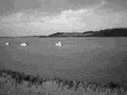
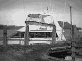
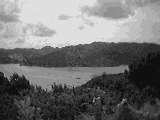

Day 06 — Friday 5 Jan
We got up a little earlier today as we were collecting our hire car. We'd arranged with them that they would pick us at Cayne's flat. They arrived at 10:45 and drove us to the Omega office. We filled in all the paperwork, collected the car, a white Toyoto Corolla, and headed off down Highway 1 towards the Coromandel peninsular.
Driving in NZ was okay and we arrived in Thames at 12:45 and so headed off to get some lunch at a cafe. The setting was good, and it had a nice courtyard. Unfortunately, they seemed to forget our order as after a 40 minute wait I had to ask where our food was. Within 5 minutes it arrived and was okay but wasn't worth such a long wait.
Whilst we'd been waiting, we'd had an SMS from Cayne making plans for the drive north this evening. We arranged to get back to his place at around 4pm, so we didn't have much time to explore the peninsular. We drove up past a few bays, Whakatete Bay, Ngarimu Bay and Te Puru, to get a feel for the place, and the bits we saw seemed really pleasant.
We drove back to Auckland and met up with Cayne. We'd packed a bag earlier in the day so we were more or less ready to head off on our way.
Cayne drove us in his car, and we headed off along highway 1 north through a load of rush-hour traffic before going over the Auckland harbour bridge. There are some great views to be seen further up the highway and we stopped at one spot to enjoy the view of the coast and some of the islands.
Cayne continued to drive and we stopped at Whangerai (pronounced fung-er-ay) for some food after having driven past the town basin to orientate ourselves. We ate at "Leks Tasty Thai" which was pretty good with some excellent fruit juice, really tasty. As we were walking back to the car we saw a load of water in the road side, and as we drove past about a minute later the pressure of the water had actually cracked the concrete. We continued our drive along, and I fell asleep when it got dark, and only woke up now and again.
We got to Cayne's Dad's place, at Houhora, near Kaitaia, at around 11:30, and had a cup of tea and a chat with Cayne's Dad's fiancee (Jo) whilst Jason and his Dad (Ross) rowed our bags to the boat. Apparently there have been some big fish caught off the North Cape this week and so the plan is for us to go out deep sea fishing tomorrow. Jason came back for us and we waded out to the rowing boat, got in and he rowed us all out to the boat. We had a look around the boat, which is made off kauri wood and is really smart and then headed off to bed. We had the master cabin, Cayne slept in one of the bunks and Jason slept in the main living area.

Huohora harbour from Cayne's Dad's house
Day 07 — Saturday 6 Jan
We had a very early start to get off the boat, back to the house for breakfast and showers and on to the harbour jetty for 8:30am.
We all got on to the boat (named Attitude) and headed off to fish for some bait. We caught 3 little-ish fish (Rich and I caught one each) which were kept alive in the aft section of the boat. These were caught near some rocky islands with blow holes and great waves splashing against them. We sailed past a mussel farm and also caught sight of a couple of dolphins in the distance as well as a penguin. We had lunch at around 12:30ish from the food Jo had sent us off with. We went out past Henderson Bay and eventually around the North Cape which was great to see. By this point the main lines were out and they were trying to catch snapper, marlin or similar. Unfortunately, despite a good 3 hours of trying we caught no fish but we did have a good sleep. We got back to shore at around 7pm and walked back to the house. Cayne's other brother, Scott, had arrived and so we had now met both of Cayne's brothers.
Rich and I started to do some journey planning, but didn't get very far before dinner was ready. We had a lovely barbecue dinner, with snapper, sausage and steak and lashings and lashings of salad.
After dinner Cayne, Jason, Rich and I headed off in Jason's Lancer to 90 mile beach through the forest. We'd taken the Lancer because the road is gravel and really rough and the Lancer is a typical hooning car (to hoon is to burn rubber, drive quickly, show off). There were a few other cars/people on the beach, but there was certainly no shortage of space! We'd missed the sunset (as we were still eating at that point) but the sky was really beautiful with pinks and oranges and these colours reflected onto the sea as well. We played bat and ball on the beach until it got too dark to see the ball anymore.
We headed back to the house and got some advice on where to go on our journey for the next 10 days before Cayne rowed us out to the boat for the night.

Cayne's Dad's boat
Day 08 — Sunday 7 Jan
I had an excellent nights sleep, the mild rocking of the boat was really soothing. We got up and packed our bags and Cayne rowed us and our stuff back to the house.
Cayne had to wake poor Jason up so we could use his bathroom for showers before having a breakfast of freshly made scones (which were lovely).
Rich and I spread all the books, leaflets and maps over the floor and attempted some more planning, this time much more successfully. We now had a plan of sorts.
Cayne and Jo were telling us about the plans for the house. In 6 weeks time they're going to have half the house knocked down and rebuilt to form a corporate home stay place. The idea is that Ross will take people out fishing on the boat, they'll have a pool, lots of decking for relaxing on, and other water based activities. It sounds really well thought out.
We set off on our journey south to Auckland with plans to stop at interesting looking places.
Our first stop was at the "Ancient Kauri Kingdom" in Awanui, a shop which makes furniture, boxes etc out of reclaimed swamp kauri, somewhere in the region of 30,000 - 50,000 years old. There was a chain sawing competition going on. This involved contestants being given a lump of wood and then having to sculpt something out of it. The competition had started on Saturday and so there were some of the previous days entries displayed. Cayne bumped into an ex-girlfriend and so they were chatting whilst we were admiring the work.
Next stop for us was Cable Bay which is a really beautiful little spot, with rocks, sea and sand. We sat and watched the waves before continuing along the road a bit further, seeing some deer and an ostrich farm along the way before getting to Mangonui. This has a fish shop where we got some lunch — we got fried blue nose, 2 scallops, chips and a pot of mussels in seafood sauce. We took these back to the car and did a short drive to a reserve, overlooking the water, with a host of seagulls trying to scare us into feeding them — it didn't work.
We headed back on the road and made a short detour to Whangarao harbour, a harbour which Cayne had first seen from the boat. We drove in and found a road to take us to a good viewpoint. This was close to St Paul's rock which was technically the summit, and there was a 20 minute walk to it which we didn't do. Instead we sat on the grass and enjoyed the really beautiful view.
Our next stop was at Lake Manuwai, a couple of kms off highway 10. This was a quiet little spot where people were sailing and some were snorkeling.
After this, we headed along the road a bit further and made a detour to Paihia, where found another nice beach to sit on, watching people playing in the sea, someone parascending and some people with a huge kite being pulled along and into the sea.
After this pleasant stop we hit the road again, catching up with loads of traffic around 50km out of Auckland. This was the evening before a lot of people's first day back into work and so I guess a lot of the traffic was due to that.
We stopped off at Orewa, not far out of Auckland and attempted a bit of kite flying. Unfortunately the wind wasn't very strong here so we went for a paddle in the lovely, warm sea after a few poor attempts to fly the kite. We headed back to Auckland and stayed at Cayne's place again.

Whangarao Harbour
Move on to Auckland to Wellington or go back to the contents page
Comment on the Northland section